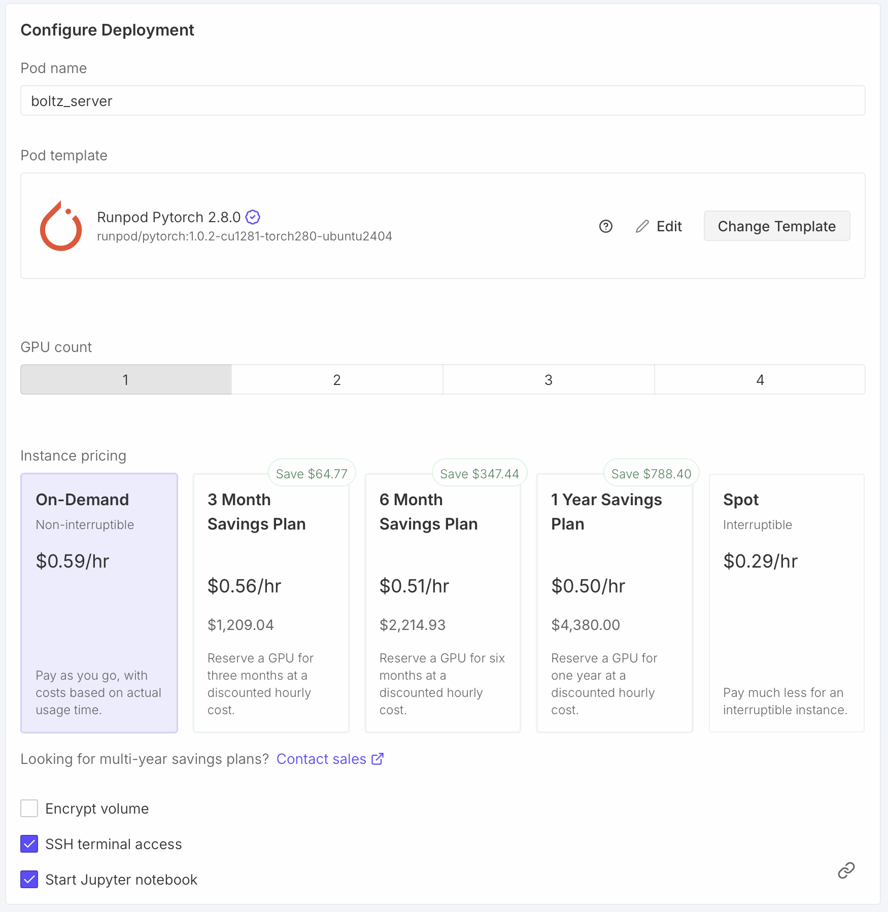
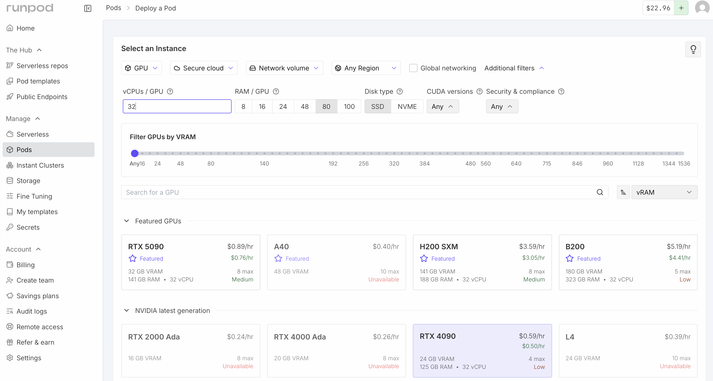
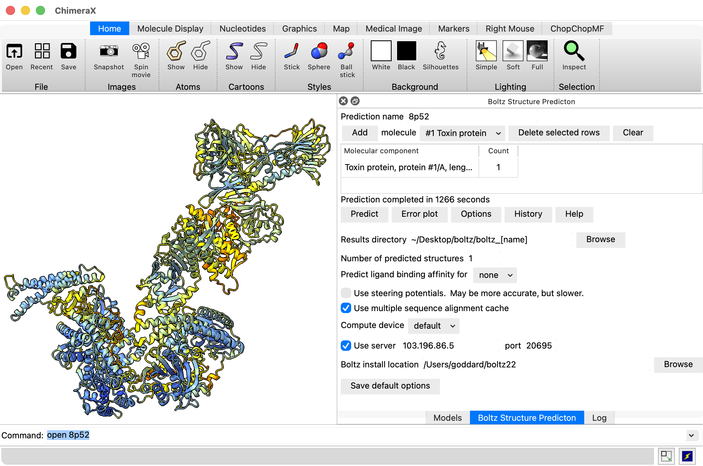
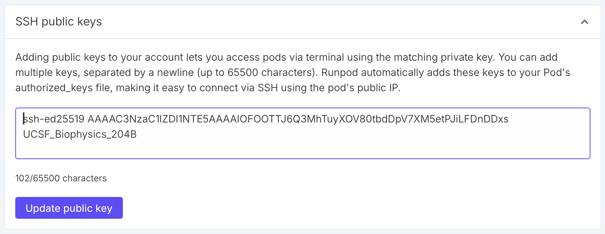

|  |

Dialog shown after pressing Edit button for Pod template |
Tom Goddard
December 31, 2025
ChimeraX can run Boltz structure predictions on another computer. For example, a computer with limited compute capability such as a MacAir laptop with 16 GB of memory can only run about a 500 residue prediction and take 15 minutes, but if it uses a Boltz prediction server with Nvidia 4090 GPU could run the same prediction in a minute and also run large predictions up to 2200 residues that would run out of memory on the laptop.
This page describes how to set up a cloud virtual machine as a Boltz prediction server using the RunPod commercial service. Using a commercial service is inexpensive for making many predictions in a short time, for instance making 5 predictions in one hour costs $0.59 with an Nvidia 4090 as described below, or running 1000 predictions of ligands bound to target in 24 hours for $14. This is inexpensive compared to buying computer equipment. But you pay for the server even when it is not running predictions, so it is not economical for infrequent use, for instance 1 year of an Nvidia 4090 costing $4380.
The ChimeraX capability to run Boltz predictions on a server was intended for using your own computer as the server, so idle time does not raise costs. We have not implemented ChimeraX Boltz server support using Docker containers that can be spun up on demand on commercial virtual machines to reduce idle costs.
I describe how to use the RunPod commercial service because it is about 2-3 times less expensive than larger services such as Amazon Web Services or Google Cloud. There are plenty of other inexpensive cloud GPU virtual machine services, for example, Vast AI has high customer ratings. The inexpensive services have some drawbacks, for instance, RunPod does not support saving an instance image for later reuse. Instead you have to save all your installations and data on persistent network storage, not always feasible with Linux when system installed libraries and packages are needed.
Create a RunPod account and prepay some amount for services (e.g. $10). Then start a virtual machine with a GPU proceed as follows.
|  |
An Nvidia RTX 4090 GPU has a good balance of performance and price. It has 24 GB of video RAM allowing predictions up to about 2200 residues, is considerably faster (e.g. 2x) than many higher-end AI GPUs, and is inexpensive at $0.59 / hour. For Boltz predictions up to 2200 residues you should have at least 64 GB of CPU memory. With less CPU memory, they will run much slower (e.g. taking minutes to load Boltz weights with 40 GB of RAM) or run out of memory. Also it is useful to have at least 16 CPU cores (called vCPU on RunPod), and 32 will be faster. Fewer cores will again lead to slower predictions, although they should work. You may see that no RTX 4090 virtual machines are available with your desired settings, and have to compromise. Interestingly RunPod charges the same price per hour for higher CPU RAM and more cores.
Newer Nvidia Blackwell architecture GPUs such as the 5090 are faster (and more expensive) and require a newer version of Torch than ChimeraX Boltz uses. You can update the Torch version of the Boltz installation if you want to try one. I experienced very slow loading of weights with a 5090.
Scroll down the RunPod web page to Configure Deployment.
|
|
The Pod name is shown in the RunPod user interface after starting the virtual machine. You can leave it at the random default name if you are starting just one virtual machine. If you will start more than one it is useful to give them sensible names so later you are not confused which one is which when shutting one down.
TemplateThe "Pytorch 2.8.0" template provides a newer CUDA version 12.8 than the default "Pytorch 2.4.0" template which includes CUDA 12.4. Boltz won't be using the RunPod pre-installed PyTorch, but will be using the CUDA GPU library and the newer library may be faster.
Expose TCP PortsChimeraX sends Boltz prediction jobs to the server on port 30172. You need to tell RunPod to allow access to this port by adding it to the list of exposed ports. Keep port 22 if it is listed since that is used for ssh connections to the virtual machine.
Check that the virtual machine summary shows sufficient memory (at least 64 GB) and vCPUs (at least 16) and press the "Deploy On-Demand" button to start the virtual machine. It takes about 30 seconds to a minute for the virtual machine to start.
|
|
Click the "Enable web terminal" switch in the RunPod "connect" shown when the virtual machine starts. Then click the "Open web terminal" link below that switch. This will give you a shell on the virtual machine in a web browser window.
To install boltz create a Python virtual environment to hold all the needed packages, and pip install from the ChimeraX Boltz github fork. The install takes about 5 minutes.
$ cd /root
$ python3 -m venv boltz22
$ . boltz22/bin/activate
$ pip3 install https://github.com/RBVI/boltz/archive/chimerax_boltz22_lowmem.zip
Get the Boltz server Python code from the ChimeraX github repository.
$ curl -o boltz_server.py https://raw.githubusercontent.com/RBVI/ChimeraX/refs/heads/develop/src/bundles/boltz/src/server.py
$ nohup python3 boltz_server.py >& ~/boltz_server_log &
The server makes a directory for each prediction in ~/boltz_server_jobs so we create that directory. We use the nohup (no hang up) command so that if we log out of the virtual machine the server continiues to run. The server log output will be in file ~/boltz_server_log. The server script uses ~/boltz22 as the default location for the Boltz installation.
|  |
To run a prediction using ChimeraX on your local computer use ChimeraX menu Tools / Structure Prediction / Boltz, setup the molecular assembly you wish to predict, then use the Options button and click the "User server" checkbutton and for the server host and port use the information under "Direct TCP Ports" on the RunPod "connect" web page (host 103.196.86.5, port 20695 in the example images).
Direct TCP ports
103.196.86.5:20695 -> :30172
The first prediction will download the Boltz neural net weights (7.6 Gbytes) to the ~/.boltz directory on the server which will make the prediction take a few minutes longer.
If you want to stop the Boltz server process you can find its process id and kill it using shell commands on the virtual machine
$ ps -axww | grep boltz_server
348 pts/0 Sl 0:00 python3 /workspace/boltz_server.py
$ kill 348
To shutdown the virtual machine press the Stop button on the RunPod web page, then the Terminate button.
To avoid reinstalling Boltz each time you start a RunPod virtual machine and redownloading the Boltz neural network parameters you can create a persistent RunPod network volume. Click "Storage" on the left side of the RunPod web page and "New Network Volume". You need to choose a data center for the network volume. You can only use the volume with virtual machines at that data center, and each data center has a limited collection of GPUs so you need to click on the data centers to find one that offers the type of GPU you want (e.g. RTX 4090) and ideally with "Availability" listed as "High" for your desired GPU type. I have used the "US-IL-1" data center. Assign a volume name (e.g. Boltz) and size (about 20 GB is needed, 10 GB for Boltz installation and 8 GB for weights). Cost is currently $1.40 per month.
|
|
When creating a virtual machine choose your volume from the "Network Storage" menu at the top of the RunPod web page. That volume will be available on the virtual machine as directory /workspace. Before doing the Boltz installation on the virtual machine change to the /workspace directory (command "cd /workspace"). Also install the boltz_server.py script in /workspace. When starting the Boltz server use
$ nohup python3 /workspace/boltz_server.py --boltz_exe /workspace/boltz22/bin/boltz --extra_options "--cache /workspace/boltz_parameters" >& ~/boltz_server_log &
The log file and the temporary job directory (~/boltz_server_jobs) do not need to be on the workspace volume. The extra_options tells Boltz to use neural net weights in /workspace/boltz_parameters instead of the default location of ~/.boltz.
To simplify the server startup I edit the boltz_server.py script to set the default --boltz_exe and --cache options to the /workspace locations so that the server startup can use the simpler command.
$ nohup python3 /workspace/boltz_server.py &
Here I also omitted the log file and nohup will make all the output go to nohup.out.
To run Boltz on the latest generation Nvidia Blackwell GPUs such as RTX 5090 or B100 or B200 requires a newer PyTorch version than the one the ChimeraX Boltz github fork currently uses. To install the latest PyTorch for use on these GPUs after installing Boltz uninstall and reinstall PyTorch.
$ python3 -m venv boltz22
$ . boltz22/bin/activate
$ pip3 install https://github.com/RBVI/boltz/archive/chimerax_boltz22_lowmem.zip
$ pip3 uninstall torch
$ pip3 install torch
Comparing speeds of an RTX 5090 to an RTX 4090 on a 1300 residue protein (ABCG2, pdb 6vxf) gave an inference time of 85 seconds vs 136 seconds (1.6x faster). The RTX 5090 had 32 vCPU and 141 GB RAM. Loading weights took about 30 seconds on the 5090, but total prediction time was 3 minutes on 5090 and about 4 minutes on 4090. Cost of $0.89/hour vs $0.59/hour, so 1.5x higher per hour for 5090.
|  |
If you prefer to login to the virtual machine from a shell using ssh instead of using the RunPod web terminal you need to add an ssh public key to your RunPod account. Click "Settings" on the left side of the RunPod web page, then "SSH Public Keys" in the panel that appears. Then copy the text from your ~/.ssh/id_ed25519.pub or ~/.ssh/id_rsa.pub file into the RunPod SSH key entry and press "Update public key".
Enable ssh when setting up virtual machineWhen you you configure the virtual machine you need to click the checkbutton to enable SSH terminal access. This will add your public ssh key to the root account .ssh/authorized_keys file so you can login without a password.
IP address and port for sshAfter deploying a virtual machine the RunPod web site "connect" tab will show the ssh command including the internet address and port to connect, for example,
ssh root@103.196.86.5 -p 20694 -i ~/.ssh/id_ed25519
Copy this to your terminal. That command includes an option "-i ~/.ssh/id_ed25519". Remove that option if that is not location of your ssh private key, or change it to the private ssh key corresponding to the public key you added in RunPod Settings under "SSH Public Keys". (If you use an RSA key you could specify "-i ~/.ssh/id_rsa", but it is simpler to just omit it.)
Boltz setup and runs do not need to run with root priveleges. In the above we installed it and started the server as root. Usually a non-priveleged account would be used for better security. You can create such an account with the Ubuntu adduser command.
adduser boltz
Then you can log out as root and do Boltz setup and start the server under this new account. I have not done that because higher security is not needed for these shortterm virtual machines.